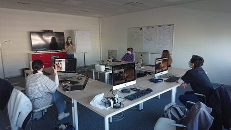

That was during the Web guild goûter with the team and Thibaud made a presentation about the design in Sonarsource.

When we started to work on the site we were very concentrated and determined.

The first day, we were nicely greeted.

It was the training. We made something in CSS and HTML about a subject we like and it was the start.